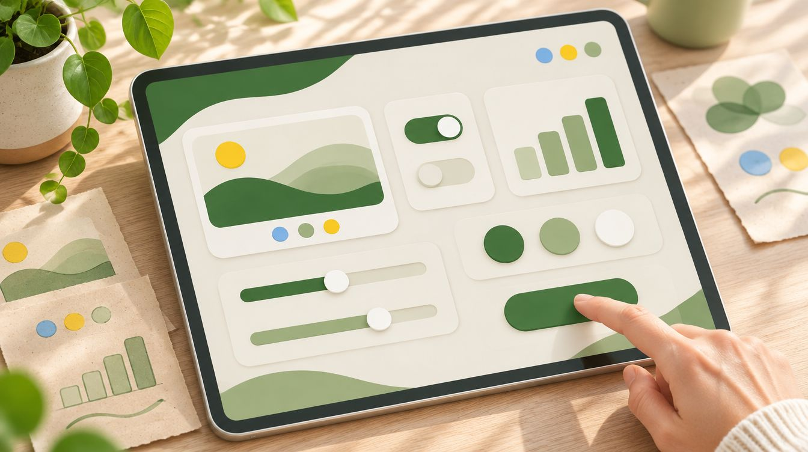
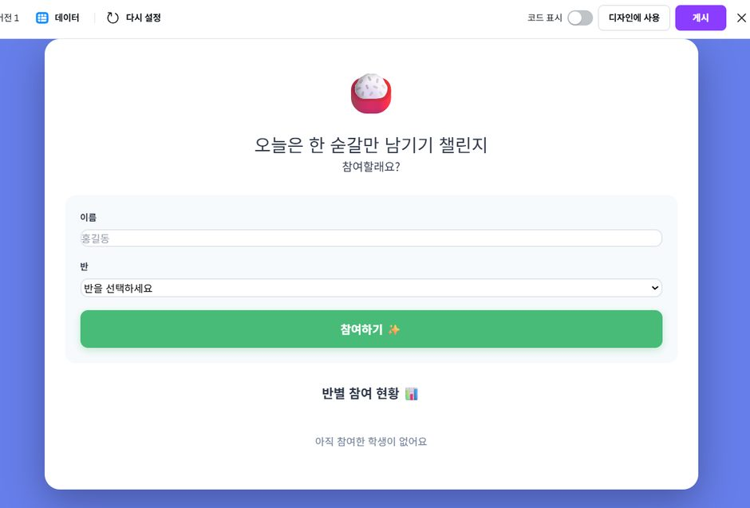
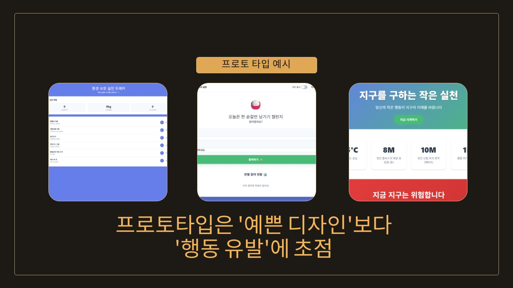
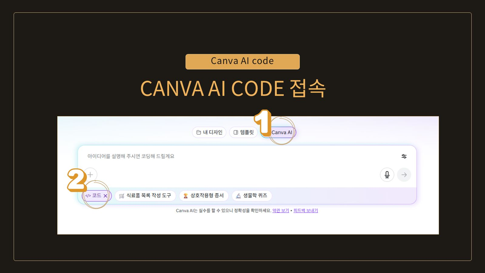
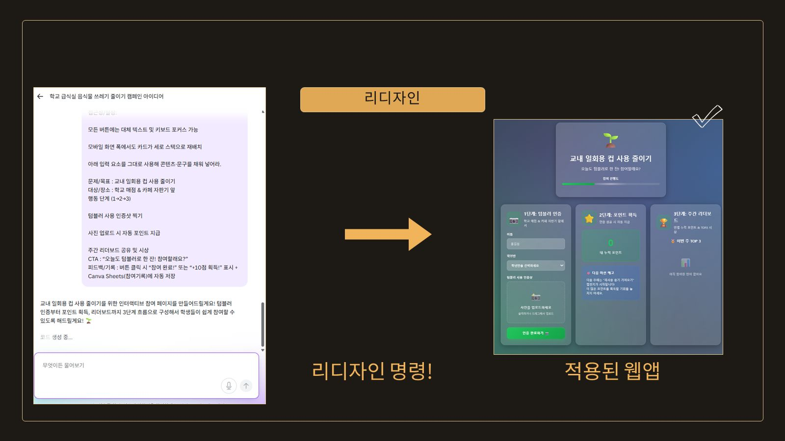
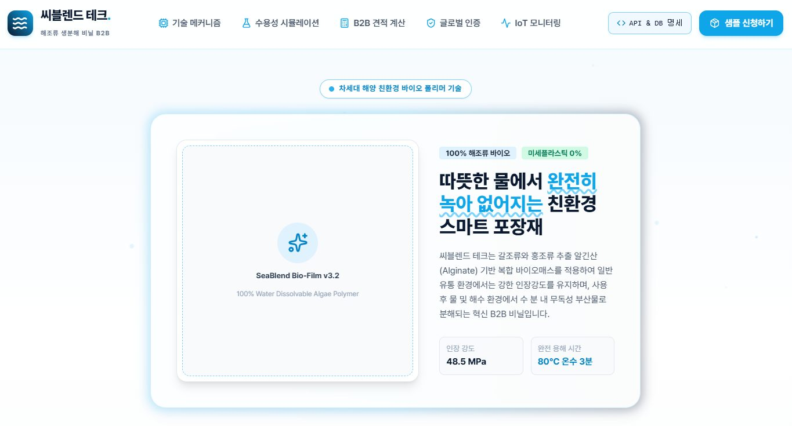
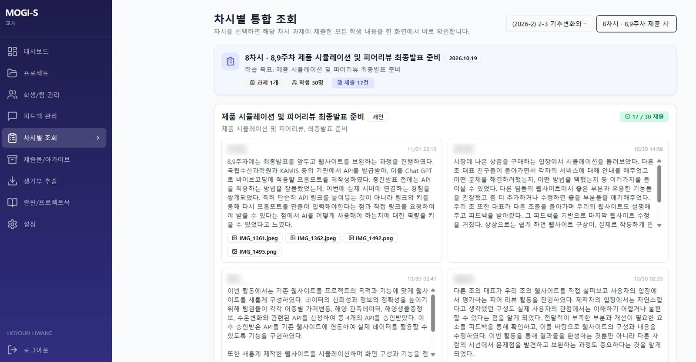

시제품을 만들고,
수정 프롬프트로 고쳐요
오늘의 목표생성형 AI와 바이브 코딩으로 디지털 시제품을 만들고, 기능 테스트와 프롬프트 수정으로 개선하며, 해결 방안의 환경적·사회적 가치를 설명해요.

수업 흐름 · 50분
← → 키나 아래 버튼으로 넘겨요. 교사 모드를 켜면 발문·유의점이 보여요.
AI가 만든 시제품은
처음 의도한 기능을 모두 구현할까요?

오늘 우리가 할 일
생성형 AI와 바이브 코딩으로 디지털 시제품을 만들고, 기능 테스트와 프롬프트 수정으로 개선하며, 환경적·사회적 가치를 설명해요.

초기 프롬프트를 바이브 코딩 도구에 넣어 봅니다
말(자연어)로 설명하면 AI가 웹사이트·앱·시뮬레이터를 만들어 줘요.
Lovable Bolt.new Replit
수업 전날: 쓸 도구에 미리 로그인해 두고(15분 구현 시간에 가입 시간 없음), 무료 요금제의 하루 사용 한도 확인. 교사 계정 하나를 여러 모둠이 돌려 쓰지 말 것(계정 공유 금지 조항·한도 소진).
접속이 막히면: 교사 화면 한 대로 시연하고, 모둠은 활동지의 v1·v2 프롬프트 작성 + 아래 'v1·v2 비교'로 대체. 또는 Google Sheets 계산표 시제품(입력 칸 → 계산식 → 결과)으로 대체.
시제품을 외부에 공개할 때는 공개 범위를 교사가 확인. 수업 PPT의 실습 예시는 Canva AI(Canva Code, 교육용 Canva)로 프로토타입을 만들고 피드백 수집 버튼을 붙이는 흐름(31~36장).
예상과 다르게 작동하면,
AI에게 어떻게 다시 말할까요?
- 어떤 조건에서 — 어떤 값을 넣었을 때
- 무엇이 — 어떤 기능·화면이
- 어떻게 달랐는지 — 예상 결과 vs 실제 결과
- 원하는 모습 — 이렇게 바꿔 줘
- 지킬 것 — 기존 기능은 그대로 유지해 줘
수정 프롬프트 예시 보기
"이름 칸을 지우고 반·모둠 번호만 받게 바꿔 줘. 기존 기능은 그대로 유지해 줘."
v1(PPT 33장)이 학생 이름을 받는 문제를 고친 예 — 프로그램 페이지 '수업에서 나온 것들'의 개인정보 점검 예시

시제품 만들고 기능 테스트하기
핵심 기능을 직접 실행하고, 입력값에 따른 출력 결과와 화면 작동 여부를 확인해요.
먼저 끝난 모둠: 경곗값(녹지율 0·100, 범위 밖 값)으로 테스트를 하나 더 해 보게 함.
발견한 오류를
수정 프롬프트로 바꿔요
필요한 기능을 추가하거나 입력·출력 방식과 알고리즘을 보완하고, 수정된 시제품을 다시 테스트해요.

동료 피드백을 인사이트로
다른 모둠이 우리 시제품을 써 보게 하고, 받은 말에서 세 가지를 하나씩 찾아요.
시간이 너무 오래 걸린다.
참여 과정이 복잡함.
친구랑 같이 하면 재밌을 것 같음.

처음 프롬프트와 지금 프롬프트,
무엇이, 왜 달라졌나요?
초기 프롬프트와 수정 프롬프트를 나란히 놓고 바뀐 부분과 그 이유를 기록해요.

우리 시제품을 1분으로 소개해요
- 해결하려는 문제와 핵심 기능
- 수정으로 달라진 점
- 사용자에게 주는 환경적·사회적 가치 — 연결되는 탄소 저감 기술 사례 1개(출처)와 시민이 참여하는 방법
- 아직 추가 검증이 필요한 부분

AI가 만든 결과 앞에서,
우리가 직접 판단한 것은 무엇인가요?
- 처음 프롬프트와 최종 프롬프트는 어떻게 달라졌나요? 가장 중요했던 수정 이유는?
- AI 결과를 검토·개선하면서 우리 모둠이 직접 판단하고 결정한 것은?
- 과학적 탐구와 디지털 기술은 기후·환경 문제 해결에 어떻게 연결될까요? AI도 전기를 써요 — 우리 시제품이 아끼는 에너지와 만드는 데 든 에너지를 함께 생각해 봐요.

활동지
만들고, 시험하고, 고쳐요
적은 내용은 이 기기의 브라우저에만 저장돼요. 다 쓰면 맨 아래 「내 기록 모두 복사」로 공동 보고서에 붙여 넣어요.
3시제품 제작과 기능 테스트
4프롬프트 수정과 시제품 개선
바꾸려는 기능과 오류가 생긴 조건을 구체적으로 설명하고, 수정 후 다시 테스트해요.
기능 테스트 기록표
| 입력값 또는 실행 조건 | 예상 결과 | 실제 결과 | 판정 (○ / △ / ×) | |
|---|---|---|---|---|
| 테스트 1 | ||||
| 테스트 2 | ||||
| 테스트 3 |
v1 · v2 비교 — 무엇이, 왜 달라졌나
5디지털 시제품의 환경적 가치 제안과 성찰
구현된 기능과 기대 효과를 구분하고, 실제로 쓰려면 어떤 검증이 더 필요한지 적어요.
최종 성찰
참고: 전 세계 데이터센터는 2024년 약 415 TWh(세계 전력 소비의 약 1.5%)를 썼고, 2030년에는 약 945 TWh로 두 배 넘게 늘 전망이에요. — IEA 「Energy and AI」(2025), 기준 시나리오
이 차시 슬라이드 · PPT 31~40장
나가기 질문
우리 시제품에서 아직 추가 검증이 필요한 부분 한 가지는 무엇이고, 어떤 데이터로 확인할 수 있을까요?